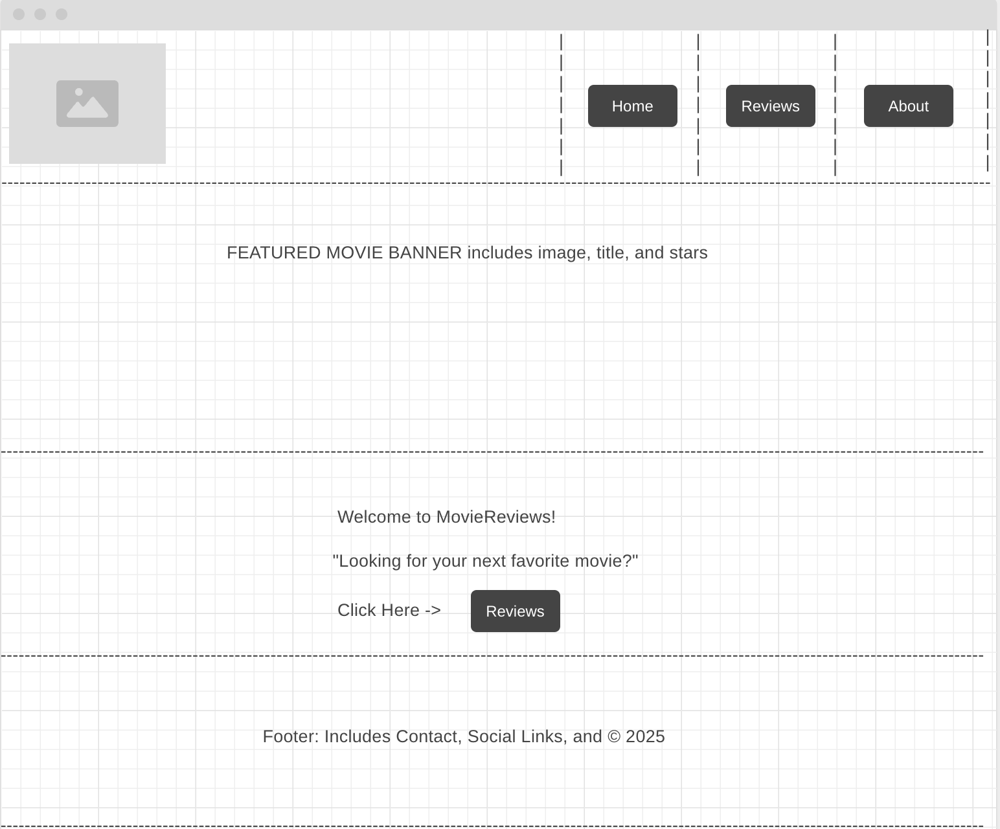
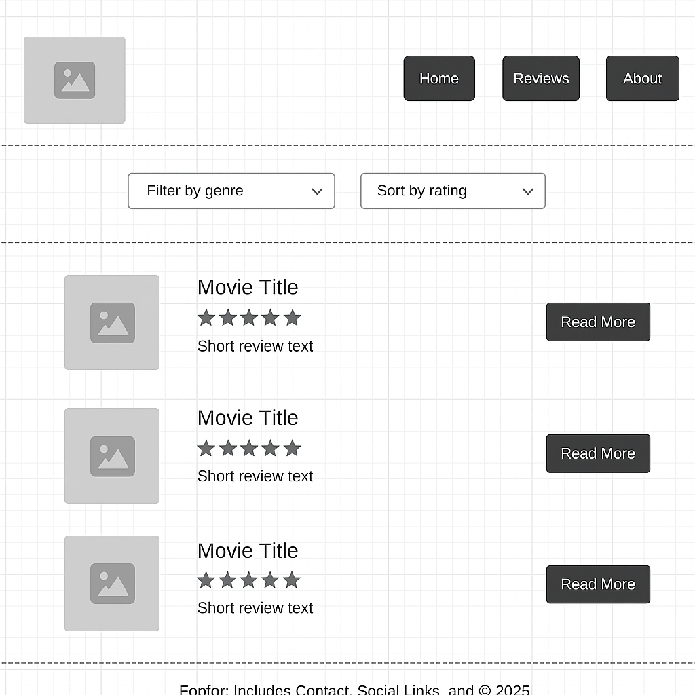

The purpose of this site is to share short, honest movie reviews for people who want to know whether a film is worth their time. It provides quick takeaways, star ratings, and basic info without overwhelming the viewer. The site is also designed to help users discover new movies based on their preferences.
This site is for casual movie fans, especially teenagers and students who enjoy watching movies but don’t have time to read long reviews. It’s designed for people who want clear opinions and easy-to-understand ratings. The audience also includes anyone looking for quick recommendations before a movie night.
This site will use JavaScript to:
Welcome to Movie Reviews! This site helps you decide what to watch next by giving you short, helpful reviews from fellow movie fans. Browse recent favorites and discover hidden gems!
Explore a list of movies by genre, rating, or title. Click on a movie to read a short review, see its rating, and get recommendations for similar films.
These are rough layout sketches of the site pages.
 